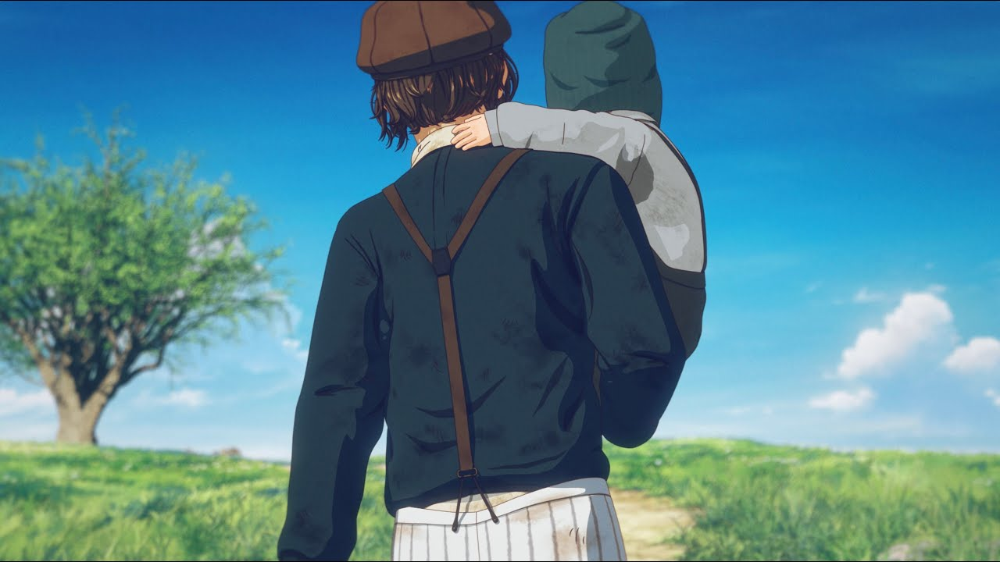
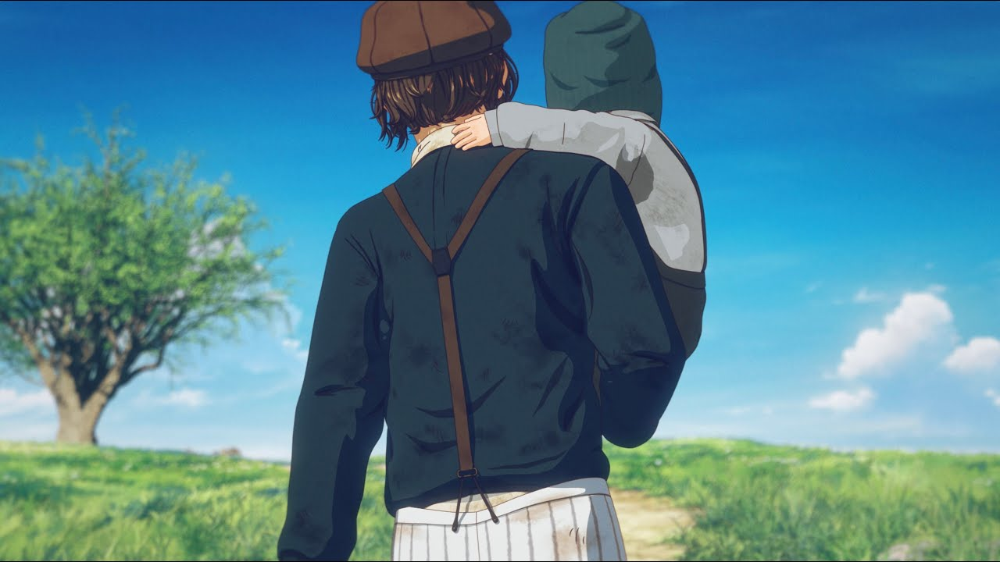

- n-buna（ナブナ）は日本のソングライター、編曲家、ボカロP、ギタリスト
- 代表曲は「夜明けと蛍」、「ウミユリ海底譚」、「透明エレジー」など
- 感情豊かなメロディーと深い歌詞が特徴、人によって曲の解釈が大きく変わる。
- 孤独や喪失、希望などのテーマを取り扱っており、世界観に引き込まれる
- 三月のパンタシアなどアーティストへの楽曲提供も多い
- 2012年：音楽活動を開始
- 2013年：初のボカロ楽曲アリストラストを発表
- 2014年：「夜明けと蛍」がヒットし、注目を集める
- 2014年：アルバム「カーテンコールが止む前に」をリリース
- 2015年：アルバム「花と水飴、最終電車」をリリース
- 2016年：アルバム「月を歩いている」をリリース、初のワンマン
活動年表

 夢と現実の狭間で揺れる主人公が自分にとって光のような存在だった君に思い馳せる歌。
夢と現実の狭間で揺れる主人公が自分にとって光のような存在だった君に思い馳せる歌。君に言葉が届かなかった僕の嘆きが心に刺さります。
人によって解釈が大きく変わる曲だと感じそれもまたn-bunaさんの魅力だと思いました。", "releaseDate": "2013月2月9日" }'>


 春の暖かさを感じさせるメロディーが心に染み渡ります。",
"releaseDate": "2024年1月5日"
}'>
春の暖かさを感じさせるメロディーが心に染み渡ります。",
"releaseDate": "2024年1月5日"
}'>